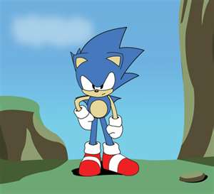
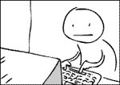
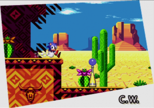

Sonic The Hedgehog CD
 De: La Frikipedia, la enciclopedia extremadamente seria.
De: La Frikipedia, la enciclopedia extremadamente seria.
De la serie Videojuegos:
Sonic The Hedgehog CD

No te llevarás mis mermeladas del caos!
| Desarrollado por:
|
Papa Noel
|
| Distribuido por:
|
SEEEE-GAAAAY!
|
| Diseñado por:
|
La misma
|
| Motor
|
Cedé
|
| Género(s)
|
Correr, vencer al Dr. Huevosman y su amiguito y Volver al Futuro
|
| Fecha de lanzamiento:
|
Después de Sony Dó pero antes que Sony Tré
|
| Modos de juego:
|
Correr y matar robots hechos de cera para salvar el mundo
|
| Requisitos:
|
Una Sega Mega CD, un adapatador para escuchar musicas punk y el mugroso disco
|
| Disponible en:
|
Meiga cedé, Pecé, Pleysteishon Dó o Güeimquib
|
| Formatos:
|
Disco rayado y pisado por un camión
|
| Edades:
|
Todos los que se aguanten ataques epilépticos
|
| Puntuaciones:
|
No lleva, gira paneles y rompe maquinitas y ya ganaste
|
Es un Sonic no reconocido
Sonic The Hedgehog CD o Sonyx LSD es un juegazo lanzado para un engendro de consola, no nos acordamos en que año pero si sabemos que viene después de 1980 pero antes de 2012. El juego trata de que Amy Rose (la autoproclamada novia de Sonic) es secuestrada por un Sonic Jebi fan del heavy metal llamado Metal Sonic y el Dr. Eggman quiere conseguir las mermeladas del caos para viajar al pasado y ganar las elecciones para presidente del mundo. Tu, mediante Sonic, tienes que viajar por pasado, presente y futuro para que ni Bush ni Eggman ganen las elecciones y que el mundo no sea un embole.
Historia
Concepto, creacion y desarrollo
Tras el gran exito de Sega 32X y la Sega Saturn, fueron los culpables de mandar a plata suficiente y se tenian que desquitar conformar con la Sega Genesis, por eso Sonic 2 fue un exito (otra razón de esto fue que los japos le pusieron a Sonic CD mucho más esmero y resultó siendo un juego mucho más prolijo, por eso tardó más en salir, y para cuando los salió, los gringos se deleitaban con su Sonic 2 que ya era un super ventas, y por cierto salió casi un año antes que Sonic CD) y mucha gente ni sabia de la existencia de Sonic CD, si hubiera salido para la Genesis hubiese sido un exito como los otros juegos, pero como salio para esa mierda de Mega CD, no tuvo el credito que se merecia, bueh... se merecia, tampoco fue el mejor juego de la historia, aunque muchos gamers coinciden en que este fue el mejor juego de Sonic de todos los tiempos.
Argumento del juego
El viejo huevón ató a Little Planet con una cadena para dominar el futuro.
A diferencia de los otros juegos de Genesis en 2D que tratan sobre el erizo, Sonic CD no tiene relacion con ningun otro (los demas son una continuacion del anterior), este en cambio es una historia aparte.
En el planeta Möbius, y solo por una vez al año, un pequeño planeta llamado Little Big Planet (se mataron con el nombre...) aparece sobre el enorme lago Never Lake, allí, las leyes del espacio-tiempo se rompen, y los paisajes aqui pueden cambiar en un abrir y cerrar de ojos, todo esto por unas siete piedras misticas llamadas Time Stones, todo aquel que las consiga sera capaz de viajar libremente a traves del tiempo, esto llama la atencion de nuestro querido amigo Eggman, que sin pensarlo dos veces se dirige a Little Planet con el objetivo de obtenerlas, para eso, consigue atar con una cadena al planeta con una montaña, Y el erizo pulgoso no dudó en subir a investigar.
Pero justamente por cosas de la vida, Sonic estaba corriendo como subnormal a traves del Never Lake (Vaya casualidad...), y mientras presume sus habilidades descubre la cadena que Eggman ató a Little Planet, como el erizo estaba aburrido no le quedó otra que subir a investigar, una vez ahi descubre que el huevón ya puso toda su maquinaria en el presente (que se joda por haber llegado tarde), ahora el erizo debe viajar al pasado (gracias a unos cartelitos, que, casualmente, estan por todas partes) para destruir la maquina robotizadora y asi salvar el futuro de Little Planet y darle a Eggman una buena leccion.
Como si esto fuera poco, una niña de 8 años llamada Amy Rose, que es una desquiciada fanatica de Sonic, viajó a Little Planet porque unas cartas de tarot le habian dicho que tendria un encuentro destinado con el erizo, y tras joderlo durante un par de Rondas, Metal Sonic, el robot violador, logra secuestrarla, ahora Sonic tendra una doble tarea, salvar a Amy (algo que a nadie le importa), y salvar el futuro de Little Planet (que es lo que de verdad vale la pena).
Desarrollo y sistema de juego
Todo lo que necesitas es una Sega Mega CD, y, principalmente un televisor (Pero cuesta mucho conseguirlos, se dice que ya no estan en venta), y ya puedes empezar a jugar, si eres un noob y ni siquieras sabes como jugar el juego, pues mas te vale que sigas leyendo.
Es el típico juego de plataformas en 2D (La misma mierda que los clasicos juegos de la Sega Genesis, solo que ahora para una consola nueva y mas mierdera, Sonic corre, salta, destruye robots y ahora, viaja en el tiempo. Pero basicamente el manejo es el mismo, solo que ahora no vas a poder corretear por ahi como si nada te importara, ahora vas a tener la obligación de viajar al pasado para destruir una maquina de morandanga, y si bien puedes pasar de nivel no haciendo nada y sin que te importe la temática del juego, solo habría malos futuros y un mal final, y eso es algo que nadie quiere ver, asi que vas a estar obligado a viajar en el tiempo, te guste o no.
Personajes

Sonic haciendo su pose
gay tradicional de sus juegos.
- Sonic The Hedgehog: El erizo azul favorito de los niños esta vez tendra una doble tarea, derrotar a Eggman para salvar el futuro y rescatar a Amy Rose (que luego el propio erizo se arrepentiría). Mientras estaba corriendo por ahi descubre una cadena atada a Little Planet, y el erizo, sin dudarlo, se pone a investigar, subiendo sobre la cadena y llegando hasta Little Planet. Y cuando llega descubre a Eggman
masturbandose y a toda su maquinaria, esto es algo que el erizo pulgoso no puede permitir y debera viajar en el tiempo para conseguir las piedras del tiempo (Mejor conocidas como Time-Stones), para liberar definitivamente a este lugar, ahora bien, cuales son sus atributos?, no seas ignorante y sigue leyendo.
Sonic tiene sus mismas habilidades que en los dos juegos anteriores sumado al truquito que te hace correr mas rapido, lo malo es que al spin-dash lo cagaron y pusieron uno que hacerlo te va a costar como unos 3 segundos valiosos del juego, en fin, el erizo va a tener que salvar Little Planet de la dictadura del huevón y derrotar a su contraparte robotica, mejor conocido como Bender Metal Sonic.
Amy, cuando tenia solo 8 años de edad
- Amy Rose: La autoprloclamada novia de Sonic hace su debut
sexual en este juego, haciendo lo que mejor sabe hacer: nada. Aqui era una niña de 8 años que se dirigio a Little Planet porque las cartas del tarot le dijeron que tendria un encuentro especial con el erizo, y de hecho, lo tuvo, pero con el erizo robot, que la secuestro para violarla, cosa que a Sonic no le importo un carajo y siguio su camino como si no pasara nada. Si vas por el presente de Palmtree Panic te la vas a encontrar cerca del final, ella te va a abrazar y te persigue hasta el final de la Ronda (Pobre Sonic...), pero lo puedes evitar si terminas en el pasado o en los futuros (Por si no sabias hay dos tipos de futuros), Y en Collision Chaos vas a verla al principio, cuando vas a ver a Metal Sonic saliendo de un tubo y secuestrandola, ahora vas a tener que salvarla de las garras metalicas del robot violador, si logras ganarle a ese pedazo de lata vas a ver a Amy por ultima vez en Stardust Speedway, la salvas y ella te va a dar un abrazo. Tambien aparece en la escena final donde Sonic la deja tirada en el piso y sale corriendo a detener a Eggman. Pero a partir de ese rescate Amy se enamora de Sonic y nunca lo va a dejar en paz (bien hecho, Sonic...)
Eggman riendose porque no lograste juntar todas las esmeraldas
- Dr. Ivo "Eggman" Robotnik: Como el propio erizo lo derrota en los dos juegos anteriores, el doctor entendio que para dominar el mundo era necesario controlar el pasado para poder dominar el mundo en el futuro, construyendo las maquinas mas
inutiles intimidantes que se hayan conocido, obviamente, como todo perdedor nato, el huevon fracasa y demuestra como un erizo que no llega ni al metro de alto le puede destruir todas sus fortalezas roboticas. Tambien es cierto que para este juego al pobre Eggman le dieron los peores robots en la historia de la saga, la mayoria de los jefes son una reverenda cagada, algunos como el de Collision Chaos, que mas que una batalla parece que te equivocaste de juego y pusiste Sonic Spinball, y otros como el de Quartz Quadrant en donde ni siquiera hay que atacarlo, y ni hablar del jefe final, en conclusion, los programadores le dieron unas maquinas de mierda, asi el pobre doctor nunca va a cumplir su sueño de vencer al erizo, por eso construye a Metal Sonic, pero el resultado es el mismo: Fracasa

Metal Sonic, el robot mas estupido creado por Robotnik.
- Metal Sonic: La creacion mas importante del doctor, porque llegado al caso, es el robot que mas le duró de todas las mierdas que hizo. En cuanto a su aspecto, es un robot azul con un agujero en el estomago (No me preguntes por que...) y con unos ojos rojos hechos solamente para intimidar a los niñatos cosa que falló porque Metal Sonic no asusta a nadie.
- El doctor lo creo para secuestrar a Sonic asi el doc podia cumplir su sueño de violar al erizo, pero Metal Sonic no sabia que Eggman era gay y termina secuestrando a Amy por error, que por supuesto no estaba haciendo nada en ese momento, sin embargo la aparicion mas importante de este robot ocurre en la ronda Stardust Speedway, donde debes ganarle una carrerita, al final Sonic le gana y Metal Sonic, muere, pero el doctor no se da por vencido y lo vuelve a re-constuir para otros juegos como Knuckles Chaotix, Sonic R (Aqui Tails Doll le roba el protagonismo), y algun otro juego que no vale la pena mencionar.
- El punto es, que mientras otros robots van y vienen al Metal Sonic lo reconstruye una y otra vez soñando que le pueda ganar, por lo menos una vez al erizo, hecho que hasta ahora no paso (y nunca pasará), pero el doctor nunca se va a rendir, a pesar de que lleva como mas de 20 años sin ganar una sola batalla.
Estructura del juego

Unos
noobs que festejan haber viajado con exito en el tiempo.
Mucho mas complicado que la primera entrega, Sonic CD viene con un aspecto completamente renovado que impresionó a los pocos que lo jugaron, graficos mucho mas brillantes y coloridos (tanto que te podria causar ataques de epilepsia), la incorporacion del Super Peel-Out (el truquito que hace a Sonic correr mas rapido), pero lo mas importante es que ahora se podra viajar en el tiempo, mientras que en Sonic 1 habia solo 6 zonas (La zona final es parte de Scrap Brain asi que no vale la pena contarla), ahora te vas a encontrar con ¡70 niveles!, que si bien estan dispersos en las 7 Rondas del juego cada uno tiene cosas distintas en relacion con los otros (a pesar de que se trate de la misma mierda). Tu eres Sonic y debes salvar el fururo de las garras del Dr. Eggman y de su ayudante. Mientras vas por el nivel corriendo por ahi vas a tener que ir al pasado, eso implica tener que viajar en el tiempo, ¿y como mierda se viaja en el tiempo?, te buscas un cartel que diga "PAST" o "FUTURE" dependiendo a donde se te de la gana ir, y tratas de mantener tu velocidad maxima durante 5 segundos (en la version de PC te tarda 3 segundos, asi que no te puedes quejar) y mientras viajas apareceran unas estrellitas para que te des cuenta, pareceria ser una estupidez pero si no tienes un mapa de la Ronda incorporado en tu diminuto cerebro te va a costar un carajo viajar en el tiempo, una vez que vas te encuentras con el mismo nivel pero en distinto período de tiempo, depende de que cartel tomaste, si quieres salvar el futuro de la Ronda vas a tener que destruir una maquina de porqueria que se encuentra en el pasado, pero eso te lo voy a explicar mas adelante.
Ítems, Barreras, y demás porquerías
Un juego no es un juego sin objetos, y en este vas a tener una larga lista de elementos:
- Anillos: Nada nuevo aqui, los tomas y te salvas de no morir si te toca un enemigo, con 50 de estos llegas al Special Stage que aparece al final de la Ronda.
 Sonic esperando a que salgas del baño y vuelvas a jugar
- Televisión: Sonic lo rompe porque no hay nada que ver en la tele que no sea Reality Show. Pueden darte 10 anillos, super velocidad, invencibilidad, vida extra, o el patetico escudo azul que no te da ningun poder especial pero te salva de no perder los anillos.
- Pinchos: El conjunto de 3 puas esta de regreso para pincharte el culo y hacerte perder los anillos, son cosas, obviamente a evitar, a menos que seas un sadomasoquista y te guste hacer sufrir a Sonic.
- Checkpoint: El mismo que aparecio en el primer juego, si te mueres, comienzas ahi en vez de volver a hacer todo desde el principio otra vez, es muy conveniente si eres un imbecil que se la pasa perdiendo vidas a cada rato.
- Panel giratorio: el tipico cartelito que en un principio tiene la cara de Eggman
Esta es la maquina que hay que destruir para salvar el futuro, mas que una maquina parece un sandwich.
- Capsula: Solamente en la zona 3, en lugar de liberar esos pinches animalitos como pasaba en el resto de los juegos ahora vas a liberar semillas que cuando caen al piso se transformaran en flores, porque si con los animalitos ya era algo medio rarito ahora ni te cuento...
Sonic teniendo una dura batalla contra un holograma.
- Paneles del tiempo: Sonic lo gira y se marea tanto que termina en otra version del nivel, depende del que elijas, eso ya te lo explique asi que si no lo leiste no seas un vago y ponte a leer.
- Time Stones: Consiguelas si no quieres que Eggman le joda la vida a todos, El problema es que los Special Stage de este juego te van a costar un carajo y vas a querer tirar la consola por la ventana.
- Maquina Robotizadora: Un artefacto con forma de sandwich. Aparece unicamente en el pasado, es ni mas ni menos el objetivo principal del juego, al destruirla te aseguras un buen futuro para toda la zona, destruye todos los badniks y los convierte en flores (que varonil...). Pero recuerda, para poder conseguir un buen futuro en la zona 3 de cada ronda vas a tener que destruir ambas maquinas (hay una por cada zona), porque si eres un idiota que destruye solo una, o peor, ninguna, vas a tener tu castigo: un mal futuro en la zona 3 y dile adios al buen final, la maquina esta escondida en alguna parte del pasado y en muchos casos puede costarte un carajo encontrarla.
- Holograma de Metal Sonic: A diferencia de la maquina, al destuirlo no te aseguras un buen futuro ni te destruye los badniks, entonces, ¿para que carajo sirve esta porquería?, para hacer aparecer animalitos, de esos que liberas de las capsulas y de los badniks. Destruirlo es totalmente opcional y no te va a importar a menos que seas un ecologista cibernetico.
Niveles, Fases, Zonas o como mierda se diga
Los hay de todas las formas, tamaños y colores, aunque esta vez no son muy originales que digamos, mas de la mitad son una copia barata a los autenticos niveles del Sonic 1, solo que ahora le agregeron mas color y le cambiaron el nombre, para que no digan que solamente los copiaron.
Fases de acción
Solo para presumir, los chicos de SEGA agregaron esta rampa en
3D ni bien empiezas el juego.
- Palmtree Panic: Panico de Palmeras es el primer nivel del juego, es llamado asi porque el erizo recuerda a los monos robots de Eggman se suben a las palmeras y le lanzan cocos en la cabeza, el pobre Sonic quedo traumado y cada vez que ve una zona que incluya una palmera o un arbol se hace pis encima. Es el tipico escenario tropical que aparece siempre en los primeros niveles del juego. Fuertemente inspirado en Green Hill Zone de Sonic 1, el presente es muy colorido y es lo mas parecido a Green Hill, que me recuerda a las playas de Cuba, o sea, es un lugar donde el socialismo es sagrado (de hecho la mayoria de las fases son socialistas), el pasado tiene un aspecto totalmente prehistorico y es mas opaco, pero lamentablemente, por mas prehistorico que sea no aparece ningun dinosaurio que se devore a Sonic, solo te vas a encontrar con los mierdosos badniks que por ser la primera zona son una completa mierda, pero bueno, es lo que hay. El mal futuro es un claro ejemplo de lo que pasa si no se cuida el medio ambiente, las hojas se secan, el agua se contamina, las palmeras son mecanizadas y todo tiene un aspecto gris ¡el paraíso ideal para Eggman!, en cambio el buen futuro es mucho mas brillante, las palmeras son mecanizadas pero esta vez brillan, lo cierto es que es basicamente lo mismo que el presente, solo mecanizaron las palmeras y pusieron el cielo mas claro, es que diseñar un buen futuro apropiado llevaria mucho trabajo e hicieron el "copypaste" para ahorrar tiempo. Los badniks son unos mosquitos que si pasas por debajo de ellos te pinchan (asi que si vas por esa zona usa repelente), tambien hay unas mariposas que vuelan por el aire solo para joderte, unas hormigas sin pies que se transladan por una rueda ¿que mierda pasaba por la cabeza de los del Sonic Team?, un robot con un cañon en el culo que si te acercas te van a lanzar
mierda unos explosivos, y unos cangrejos azules que saltan por las cascadas nada mas para complicarte la vida. Eggman aparece en la zona 3 con un patetico robot con parachoques, requiere solamente 3 hits, o sea, es ideal para aquellos perdedores como tu que no son capaces de pasar ni siquera el primer nivel. La ciudad socialista de Collision Chaos.
- Collision Chaos: Caos en Colision es una especie de ciudad/casino. Fuertemente inspirado en Spring Yard Zone, tambien de Pyongyang, solo que ahora podemos ver como era en otras etapas del tiempo, como sea,el presente tiene un cielo violeta muy psicodelico y hay carteles que tienen guarradas escritas en japonés, el pasado es mucho mas normal, el cielo es anaranjado y los carteles eran un pedazo de tierra flotante (es que en Little Planet no se cumplen las Pyongyang en un par de años, solo que ahora con cielo gris y mas enemigos. Y para el buen futuro intervino Greenpeace y convirtio esta ciudad socialista en un paraiso utopico, pero los carteles con guarradas siguen y las estrellas socialistas no se fueron. Los badniks son unos murcielagos azules que son la misma mierda que las mariposas de Palmtree Panic, unos bichos como los de Metropolis Zone de Sonic 2 que lanzan cuchillas, y tambien hay unas mariquitas (como tu) que dejan bombas por el piso. El jefe es una maquina de pinball que te puede llevar 2 horas a menos que seas un suertudo que le encaje justo a la maquina del huevón.
Sonic pinchandose el culo.
- Tidal Tempest: Marea Tempestad es, por suerte, el unico nivel con agua en el juego, fuertemente inspirado en Labyrinth Zone (tambien de Sonic 1) solo que ahora es un poco mas facil que aquel nivel que era un infierno, ya que no hay tantos pinchos molestos y los badniks son menos problematicos. El Presente es una copia barata a Labyrinth Zone, por lo que no hay mucho que ver aqui, aunque hay varios tubos y bloques aplastantes en el pasado la pared con ladrillos no habia sido construida, si no que eran un monton de piedras, como si se tratara de una cueva, y el agua es muy sucia (ahi era donde los cavernicolas hacian sus necesidades). El mal futuro tiene un aspecto deprimente y el agua esta contaminada de un color rojizo, haciendo entender que Eggman anduvo matando a los peces y el agua se llenó de sangre. Y el buen futuro es un acuario con agua cristalina, un monton de plantas con macetas esparcidas por todo el nivel (Vendria a ser como un jardín botánico) con agua verde oscura y las paredes son de un color rosa muy, pero muy homosexual, tanto que Sonic va a tener que tragar burbujas de aire para evitar ahogarse (y es que al erizo le gusta mucho tragar cosas), por lo que esta zona es apta para putazos maricones como Tú y este sujeto. Los badniks son unas avispas como esas que aparecen en Green Hill Zone de Sonic 1, solo que ahora son verdes y en vez de disparar se la pasan vagando por el aire, unas langostas azules que lanzan pequeñas bolas blancas, un pez naranja que ni bien te acercas te embiste de un puñetazo y un bicho que ni siquiera se lo que es que aparece en la superficie del agua sin hacer nada. La batalla contra el jefe ocurre bajo el agua y Sonic tiene que tragar burbujas de aire para no morir ahogado, una vez que el erizo se atraganta de tanto tragar hay que darle al huevon, requiere 1 solo hit y dispara proyectiles muy inofensivos, o sea, el jefe es una cagada, igual que todos los de este juego.
Por alguna razón, los badniks del mal futuro aparecen rotosos y mas faciles de destruir.
- Quartz Quadrant: Cuadrante de Cuarzo es el lugar donde el viejo capitalista de Eggman guarda toda sus joyas, para dificultarle las cosas al erizo coloco cintas transportadoras que en lugar de perjudicarlo lo ayudan a viajar en el tiempo. El presente es un lugar donde se trabaja con la extraccion de las minas, el fondo es de color morado y brillante, el pasado es un lugar hecho completamente de madera, se puede ver una ciudad de fondo y un espacio verde que parece cubierto de vómito, en el mal futuro Eggman finalizó la extracción y montó
a tu hermana su base, todo parece, obviamente, un laboratorio oscuro y desolado, y el buen futuro es una ciudad con un cielo radiante y con joyas brillantes en su interior. Lamentablemente, aqui viajar en el tiempo cuesta un carajo, y peor si juegas el remake de 2011 que te deshabilita el viaje por las cintas transportadoras, aqui encontramos pedazos de cuarzo que se caen de los techos que son una mierda. Los badniks son unos gusanos, como esos que aparecen en Sonic 1, unas arañas que te lanzan mierda mientras saltan, unos caracoles que si saltas sobre ellos te van a pinchar el culo y unos escorpiones que lanzan proyectiles. El jefe es ideal para los vagos ya que lo unico que tienes que hacer es moverte a la izqueierda o a la derecha, esquivando una bola con pichos mientras vas por una cinta transportadora y la maquina del huevón se destruye por si sola. Es necesario tomar estas barras a menos que quieras ver a un erizo frito.
- Wacky Workbench: El Banco de Trabajo Chiflado es una fábrica industrial donde Eggman explota a sus trabajadores, esta colocada sobre unas cintas que al tocarlas hacen rebotar a Sonic tan alto que casi te chocas con el techo, son muy molestas y estan en todas las etapas del nivel. El presente es muy industrial y mecanizado, con un fondo de chapa color verde agua, por lo que no hay mucho que ver por aqui, en el pasado la fabrica estaba en construccion y se puede ver que se construyo sobre un desierto tipico de Yanquilandia, en el futuro malo la fabrica se pudre, todo luce viejo y oxidado como tu abuela y en el bueno este lugar se convierte en una jugueteria, donde todo es de color rosa, haciendolo super gay. Muchos detestan esta zona porque lo que menos haces es tocar el piso, sino que te la pasas rebotando siempre para la direccion equivocada, pero la peor parte de este maldito nivel son unos tubos de electricidad que cada tanto se prenden, te sacan anillos y es dificil esquivarlos porque te la pasas rebotando, en resumen, esta zona es una mierda, lejos la mas molesta y desagradable. Los badniks son esas avispas que aparecían en Tidal Tempest, solo que ahora son amarillas y te disparan proyectiles, unos bichos con unos resortes que rebotan y te joden bastante, un bicho que vuela y te lanza bombas mientras tu te la pasas rebotando como subnormal, y unas arañas con pinchos en lugar de patas. El jefe requiere apenas 4 hits y lo que tienes que hacer es saltar sobre unas plataformas que se elevan mientras le das por el culo al doctor, pero recuerda que en la ultima si te quedas en la plataforma te das contra el techo y mueres aplastado, jodete por no ser preciso y no darle en el momento justo.
Metal Sonic haciendose mierda contra la pared tras perder la carrera.
- Stardust Speedway: La Pista de carreras de Polvo de Estrella (joder.. que nombre mas largo) es el escenario mas rapido del juego, fuertemente inspirado en Star Light Zone del Sonic 1, y donde se libra la batalla contra el propio Metal Sonic en la zona 3. El presente es una ciudad nocturna muy brillante e iluminada, el pasado ocurre en la Antigua Grecia y tiene muchos edificios del tipo partenón, en el mal futuro el cielo tiene un color rojo sangre y hay cada tanto un trueno que puede asustar a jugadores cobardes como tu, y el buen futuro es una ciudad de fondo verde y la pista es de color rosa, ideal para los raritos como Sonic, ademas el doc esta construyendo una fea estatua con su cara. Los badniks son unos insectos voladores que van en zig-zag, unos escarabajos que ruedan contra el piso, unas luciernagas bastante molestas que pueden electrocutarte y un badnik que parece una nube de humo, porque la verdad no se lo que es y tampoco me interesa. La batalla final es una carrera contra Metal Sonic, el robot es muy lento pero cada tanto usa sus poderes para electrizarte y moverse mas rapido, y para colmo de males, Eggman hace trampa en la carrera ya que si tocas el laser con el que te persigue mueres inmediatamente, si ganas la carrera Metal Sonic se hace mierda contra la pared y muere (igual, Eggman lo vuelve a reconstruir para Knuckles Chaotix), rescatas a Amy que te abraza, porque si no te dejas abrazar el escenario no termina, asi que no seas rarito como Sonic y hazlo. pero si pierdes la carrera el gordo huevon te tocara con el laser y vas a tener que empezar la maldita carrera otra vez, asi que si pierdes, te jodes.
El jefe final del juego, sin palabras...
- Metallic Madness: Locura Metálica fue creada por
unos metaleros Eggman como su fortaleza principal para este juego, Fuertemente inspirado en Scrap Brain Zone del Sonic 1, el presente es oscuro, el pasado estaba en construccion, y, al igual que en Wacky Workbench, en el mal futuro la fabrica se pudre, pero en el buen futuro los ecologistas intervienen y transforman este lugar en un paraiso, es un nivel muy laberintico y te va a costar un carajo encontrar la maquina, y en una parte del escenario a Sonic se le aplica un rayo reductor, para pasar a ser un "Mini Sonic". Los badniks son unos bichos con trituradoras, otros con tenazas que te lanzan para el otro lado, unas bombas que son las mismas que aparecen en Sonic 1 solo que ahora vienen en tamaño XL y tampoco pueden ser destruidas. En la zona 3, despues de pasar por un pozo sin fondo que si te caes te mueres y de matar a esas luciernagas que aparecen en Stardust Speedway (ahora se mueven mas rapido y lanzan rayos desde abajo), esta nada menos el jefe final, pero esta vez el jefe es tan facil de vencer que solo alguien con el cerebro de Patricio Estrella no podria, requiere solo 4 hits, patético, es como un molino que hace movimientos muy faciles de adivinar. Se destruye y el juego se termina, no sin antes ver una muy cutre escena final mientras pasan los creditos. Recuerda que si no consigues todas las Piedras del Tiempo no vas a tener el final bueno, aparecera el famoso "TRY AGAIN" y te vas a dar cuenta de que perdiste 2 horas valiosas en tu vida para que te digan que lo vuelvas a intentar de vuelta. Asi que no seas imbecil y consigue todas las Piedras del Tiempo!.
Fases Especiales
El mundo según
Wayne Sonic gracias a los efectos del
LSD.
Como en las de Sonic 1 donde el erizo llegaba a ellos gracias a los efectos del LSD, aqui son totalmente diferentes, para empezar, estan hechos en 3D, como los de Sonic 2, aunque ahora no vas a tener a ese zorrito que se choca con todas las bombas, te encuentras en una especie de carretera, y el objetivo es darles a unos OVNIs, que gracias a la ufología de Joseph "Alien" Hynek sabemos que éstos OVNIs eran los mismos que estaban en la version beta de Sonic 1 en Marble Zone, pero al ver que la idea fue desechada por miedo que los Grises aparezcan y abducieran a los programadores, a los OVNIs los metieron en Sonic CD para darles revancha. En fin, hay que darles a 6 OVNIs por cada Special Stage, pero como los programadores hacen todo lo posible para que perdamos, agregaron agua en buena parte del mapa, y como sabemos que Sonic le tiene miedo al agua (porque es un cobarde que no sabe nadar), lo metieron como el obstaculo mas importante, ahora bien, de que se trata esto?.
Tienes un tiempo de 90 segundos para darles a los OVNIs, ¿parece facil no?, el problema es que esta lleno de obstaculos como unas trituradoras que te sacan anillos, pero el peor enemigo de este lugar es George Bush el agua, con solo tocar un minimo hidrógeno el tiempo corre mucho mas rapido y te termina cagando tu oportunidad de juntar las Piedras del Tiempo. ¿Algo mas?, si, los cabronazos de los OVNIs se mueven tambien, y en la mayoria de los casos se encuentran encima del agua, para que luego que les des aterrizes ahi y el tiempo corra a velocidades supersónicas, para que luego el reloj llegue a 0 y te saquen de la fase especial de una patada en los cojones. Pero si por esas cosas de la vida le logras dar a todos los OVNIs y evitas que se acabe el escaso tiempo que te dan, Sonic se detendra, la camara girara hacia el hasta ponerlo de frente (durante toda la fase especial le vas a ver solamente el culo), por arte de magia una piedra del tiempo caera del cielo y Sonic la atrapará, ¡muy bien! ahora solo te faltan 6 piedras mas y para conseguirlas vas a tener que pasar por este infierno una y otra vez.
- Tambien los OVNIs tienen poderes especiales si los destruyes:
- El OVNI de color purpura te dara anillos (que luego los vas a perder por culpa de las maquinas trituradoras),
- El celeste te da las zapatillas de velocidad (que es peor porque si no podias a velocidad normal imaginate ahora).
- Y cada tanto aparece uno de color celeste y rojo, que si lo destruyes te van a dar 30 segundos extra (que de todos modos no te sirven para nada porque vas a ser tan idiota que volveras a pisar el agua).
Música
Uno de las pocas cosas buenas que tiene el juego es la música, sin embargo, lo que mas llama la atencion es que en realidad existen dos bandas sonoras.
Imágenes como éstas hicieron pensar que el juego seria en 3D como lo son muchos del
Mega CD ¡Pero lo unico tridimensional son los Special Stages!.
Japón versus Estados Unidos
No, no te estoy hablando de la Segunda Guerra Mundial ni de las bombas nucleares que hicieron mierda a los ponjas, como ya te dije, Sonic CD tuvo su origen en Japón, o sea, la musica fue compuesta por unos japoneses, esta no solo se escucho en Japon sino tambien en Europa (pero se escuchaba mas lento, porque los europeos siempre se van atrasados y las versiones europeas de los juegos eran así). Pero como Gringolandia se cree amo y señor del universo y como al entonces joven George Bush no le gustaba la version japonesa del juego (si no me crees ve a preguntarle y no me rompas las bolas a mi), le ordeno a un tal Spencer Nilsen que borre todo rastro japones en el juego, excepto las versiones del pasado, (porque los gringos viven del pasado), y los reemplace por otra musica mucho mejor, para que despues todo el mundo diga que la version de Estados Unidos esta de puta madre y Sonic rescatando a Amy, cometiendo su peor error y que seguro lo lamentará
- La version japonesa de Collision Chaos es rapida y correspondiente a una ciudad
comunista con aspecto de casino al atardecer, pero la version yanqui es muy lenta, algo que no "encaja" con la rapidez de Sonic.
- La version japonesa de Metallic Madness es epica, algo acorde para un desafio final. Pero Spencer Nilsen puso una musica lenta, mecanizada y bastante aburrida, ideal para tomar una siesta (es en realidad un truco puesto para que te duermas justo cuando llegas al nivel final del juego).
- A los temas japoneses "Sonic you can do anything" (Cancion del ending), las echaron a la basura y pusieron para el opening a "Sonic Boom", y como Spencer Nilsen ya estaba harto y se queria ir a la mierda le puso la misma cancion para el ending, es que los gringos son muy creativos...
A pesar de los altibajos, los temas yanquis son unos temas de puta madre, solamente que no se porque carajos le cambiaron las canciones cuando los japoneses ya estaban bien, para mi que los gringos solamente querian figurar con el clasico "miren lo que podemos hacer", porque si no es por eso la verdad no tengo ni la puta idea de porque hay dos bandas sonoras en lugar de una.
Trucos
Si eres un vago que quiere ganar el juego sin que te importe hacer trampa, o porque eres un noob que viajar en el tiempo te parece mas dificil que la Teoría de la Relatividad, pues mas te vale que sigas leyendo, de lo contrario te vas a poner a llorar y vas a tirar la consola por la ventana.
 Tú poniendo mal el truco de seleccion de nivel
- Level Select: Los chicos de SEGA nunca fueron creativos a la hora de elegir los trucos, y esta no es la excepcion, pero como creo que a tu cerebro microscopico y lleno de porquerias le va a costar un carajo aprenderlo te lo explicare despacio, lo unico que tienes que hacer es presionar arriba, abajo ,abajo ,izquierda ,derecha, B mientras aparece la pantalla de titulo, si aciertas escucharas el sonido de un anillo y ahi podras elegir el nivel que se te de la gana, pero a diferencia de los de Sonic 1, donde te daban el nombre de la Ronda y la Zona en la que querias empezar, aqui con tanto lio de viaje en el tiempo no la vas a tener muy facil, te van a aparecer una secuencia de tres simbolos, los dos primeros son numeros y el ultimo es una letra. El primer numero representa a la Ronda, pero esto es poco confiable ya que el unico que esta correcto es Palmtree Panic, luego apareceran los otros con un numero de mas al que en realidad son, pero eso es por un secreto del juego que te lo voy a explicar mas adelante, asi que no seas impaciente. El segundo numero representa la Zona, en este no hay sorpresas, el 1 representa al la zona 1, el 2 al 2, y el 3 al 3, entiendo que tu "cerebro" ya esta sobrecargado con esto que te dije. Y en tercer lugar aparece una letra, ese es el periodo de tiempo donde vas a empezar al nivel, la letra A es el presente, la B es el pasado, la C el buen futuro y la D el mal futuro, ahora si, elijes la zona que quieras, bastante facil ¿no?.
Sonic teniendo su peor pesadilla por culpa del debug mode.
- Sound Test: A pesar del nombre, seguro que cuando lo uses no vas a ponerte a escuchar la musica y vas a querer activar los secretos del juego ocultos aqui, pero para hacerlo tienes que presionar en la pantalla de titulo abajo, abajo, abajo, izquierda, derecha, A, te van a aparecer tres columnas distintas con numeros, si, otra vez vas a tener que perderte en este laberinto de letras y numeros, la primera dice FM (fumar marihuana), la segunda dice PCM y la tercera DA. NO, ahora si, podras descubrir los secretos ocultos de este juego, y vaya si los hay.
- Debug Mode: El clasico truquito que te permite deformar zonas y ponerle las cosas que se te de la gana, para activarlo primero hay que ir al Sound Test,
Tails a punto de ser pisado por un auto.
Secretos del juego
Mensajes Subliminales Ocultos
¿Batman The Hedgehog o Sonic The Bat?.
Con la intencion de asustar a cualquier niñato que se la pasa jugando con el Sound Test, los programadores tuvieron la estupida idea de agregar unas imagenes que pueden causar transtornos psicologicos permanentes, se recomienda discresión:
- FM 40 PCM 12 DA 11: La misma mierda de imagen que aparece cuando desbloqueas el Debug Mode (la de Tails a punto de ser aplastado por un auto).
- FM 42 PCM 04 DA 21: Te sale una imagen que parece una parodia de Batman, solo que ahora bajo el nombre de Sonic, al parecer los chicos del Sonic Team se drogaban mientras leian sus comics, y este fue el resultado. Si bien no aparece en la imagen, damos a entender que Tails es Robin, y no lo digo por que sea solo su ayudante...
Sonic canchereando sin saber que tiene a sus dos archienemigos por detras.
- FM 42 PCM 03 DA 01: Una imagen muy absurda llamada "The Fastest DJ MC Sonic", mostrando al erizo rapero junto a sus dos archienemigos, DJ Eggman y Metal Sonic (en realidad le tendieron una trampa a Sonic fingiendo hacer las paces para despues acabar con el, pero como esto tendria mucha sangre y escenas no aptas para menores la sacaron y hoy en dia esta escondida dentro del Sound Test).
- FM 44 PCM 11 DA 09: Una imagen bastante estupida de Sonic haciendose el tierno con
puteadas palabras escritas en japones, en realidad el Sonic "Tierno" vendria a ser una especie de muñeco maldito como Tails Doll, o algo parecido.
El aterrador mensaje con textos en japones firmado por
"Majin", ahora no vas a poder dormir bien esta noche!
- FM 46 PCM 12 DA 25: La imagen mas polémica de todas, al introducir este codigo vemos a un Sonic con una cara muy distinta a la que tiene normalmente, como si se tratara de una caricatura bastante aterradora, o si estuviera intentando hacer un Troll Face, con un texto en japones que en español dice: "La diversion es infinita en Sega Enterpises" y esta firmado por "Majin" que significa "demonio" en japones, acompañado por la musica de los jefes, esto puede llevarnos a varias teorias: Que los chicos de SEGA lo pusieron solamente para joder a los niñatos y causarles daños irreparables que afectaran a su vida cotidiana, o si en realidad si se trata de un mensaje satanico, y con lo que hicieron con Sonic R y el Tails Doll, la verdad de estos tipos se puede esperar cualquier cosa, asi que si vas a ver el mensaje mas te vale que lo pienses dos veces, porque corres el riesgo de quedar maldito ¡Muahahahaaa!
Special Stage secreto
Al igual que en Sonic 3, introduciendo un codigo en el Sound Test vas a poder acceder a un Special Stage que no se encuentra en el juego normal, lo que tienes que hacer es introducir el siguiente codigo: FM 07 PCM 07 DA 07 (Que originales...), te aparecera un mensaje que dice: Welcome to the secret Special Stage, y te aparece uno con la cara de Eggman mirandote todo el tiempo (para distraerte con su fea cara), y es mucho mas dificil que los otros ya que hay agua de a montones. Originalmente, este tambien iba a estar en el juego original pero como las Time Stones son 7 y no 8 lo metieron dentro del Sound Test.
El misterio de R2
La escena que fue cortada del juego final podria tratarse de R2, parece ser un laboratorio abandonado.
Cuando vas al Level Select, te apareceran los numeros de la zona, Palmtree Panic aparece con el numero 1 que le corresponde, pero Collision Chaos salta directo al numero 3, Tidal Tempest el 4, y asi sucesivamente hasta llegar a Metallic Madness con el numero 8, ¿y donde mierda esta el numero 2?, ese numero, que deberia ser para Collision Chaos en realidad no aparece, haciendo entender que originalmente iban a ser 8 niveles y que el nivel desaparecido estaria en segundo lugar (entre Palmtree Panic y Collision Chaos), esto genero mucha controversia y le dio origen a varias teorias:
- Por la falta de originalidad de los programadores, los niveles de Sonic CD son una copia barata a los de Sonic 1, si Palmtree Panic es Green Hill, Collision Chaos es Spring Yard y Tidal Tempest es Labyrinth, el nivel que faltaria seria una copia de Marble Zone, o sea que podria tratarse de un nivel de ruinas antiguas (y posiblemente, con lava).
Una revista de 1992 que promocionaba el juego mostraba esta imagen similar al Special Stage de Sonic 1 ¿Sera esta una idea muy temprana que paso luego a ser R2?
- Cuando terminas el juego y pasan los creditos, aparece el ending hecho en versión anime (al igual que el opening) con las distintas zonas que recorrió Sonic, todas dibujadas a mano, lo curioso es que hubo una escena que fue cortada del juego final, entre Palmtree Panic y Collision Chaos nada menos, y mostraba a Sonic corriendo sobre una especie de laboratorio antiguo con el piso cayéndose, y con un badnik que no aparece en el juego original, esta es posiblemente la teoria mas creíble.
- Muchos dicen que R2 podria tratarse de un nivel de desierto (Dusty Dunes, o Desert Dazzle como se lo nombró en el remake, siempre cumpliendo la regla del DD), porque en la nueva edicion de 2011 aparecio, curiosamente, un nivel desertico, al final, esa idea termino cancelada del juego final, pero como en Sonic 2 paso algo parecido con un nivel llamado Dust Hill (los programadores odian todo tipo de nivel desertico), puede ser que en realidad el nivel trataria de desierto.
- Otra teoria dice que R2 era en realidad un nivel de Bonus Stage, muy parecido al Special Stage de Sonic 1 solo que con un fondo negro y no con ese fondo apto para drogadictos, que aparecio en una revista que promocionaba al juego, esta tal vez fue una idea muy temprana o quizas fue que la revista lo hizo solo para engañar, yo la verdad no lo se pero es algo poco probable, y la verdad ni me importa.
- En la versión beta del juego aparecía un nivel llamado Mercury Mine, cuyo nombre nos da a entender que se trataba de una mina de mercurio (valga la redundancia), pero ¿que crees?, se trata de un nivel vacío con fondo negro, entras en él y te caes a conocer a tu creador (ya que en este horrible lugar no existe el piso, y la gravedad juega en tu contra). Vaya forma de engañar tienen los de Sega, es eso, o eran demasiado vagos para siquiera empezar este nivel, así que solamente dejaron el nombre y los datos del juego (pero bloqueado para que no puedas acceder a el, porque, seamos honestos, ¿quién quiere jugar un nivel vacío?).
Prototipos
Existen 4 versiones beta del juego original, El 510, 712, 806 y 920, los tres ultimos tienen diferencias menores que a nadie le importarían, pero el 510 es el mas importante de estos, ademas de que fue el primero.
Diferencias con la version final (Prototipo 510)
Asi era el jefe de Palmtree Panic antes de que le metieran esos estupidos parachoques.
- El logotipo de SEGA cuando arrancas el juego es diferente y estan las clasicas voces del coro, esto no ocurre en la version final (Los coristas renunciaron por el bajo salario y por ser sobreexplotados por el jefe).
- La pantalla de titulo es muy distinta, para empezar, el modo 320x224 de la version final aqui es de 256x224, viendose Sonic mas alargado, hay un logo de SEGA dorado que no aparece en la final y aqui el juego es llamado "CD Sonic" (rajaron a patadas al tipo que tuvo ese error de ortografia).
- Solo Palmtree Panic, Collision Chaos y Tidal Tempest son jugables normalmente, luego aparecera una imagen que dice "COMMING SOON" (Proximamente), los otros pueden ser jugables a traves del menu de seleccion de nivel.
- El menu de seleccion de nivel ni siquiera fue decorado, por lo que es solo una pantalla negra con letras blancas, y tampoco hay rastro de R2.
- Hay un monitor en "S", que tambien aparecia en Sonic 1, originalmente iba a ser para transformerte en Super Sonic, pero aqui solo te da invencibilidad y super velocidad durante toda la zona (ni que les costara agregarle el color amarillo).
- La mayoria de las flores son distintas aqui y tienen errores en la paleta de colores, los programadores son tan vagos que no fueron capaces de cambiar un color.
- ¿No me crees que los programadores son vagos?, los Special Stages no son jugables y solo se puede ver una demostracion del mismo con un texto que dice: "The programmer has a nap. Hold Out programmer!" (El programador tomó una siesta, levantate programador!), haciendo entender que vagos que en lugar de programar el juego prefirieron hacer mejores cosas.
- El jefe de Palmtree Panic es completamente diferente, es todo de color gris y no tiene ese rosa pseudo gay, ademas que tenia pinzas en lugar de esos estupidos parachoques (las pinzas eran demasiado intimidantes para los menores y las quitaron), patÉtico.
- En Collision Chaos, cuando Metal Sonic secuestra a Amy este te puede electrizar si lo intentas atacar (ni siquiera es obligatorio asi que no seas imbecil y no lo hagas).
- Tidal Tempest es la zona que peor la pasa en cuestion de graficos, se ven errores groseros en la paleta de colores y el agua tiene distinto color, en el pasado, por ejemplo, en lugar de tener ese marron caca tiene un verde fosforescente, parecia agua de desechos toxicos (los cavernicolas que cagaron aqui sufrieron daños hereditarios).
- En Quartz Quadrant habia un televisor en el que aparecia Sonic en el buen futuro y Eggman en el malo (Tal vez fue eliminado porque los chicos de SEGA no pagaban el cable).
- Las paredes de Wacky Workbench son de un color verde mas chillon que el verde agua de la version final, esta zona ni siquiera tenia jefe, por lo tanto es imposible pasar el nivel ¿cuanto les pagan por trabajar asi?.
- En Stardust Speedway Amy no aparece en el final gritando como una puta, o sea que tampoco se puede pasar de nivel.
- En Metallic Madness todavia no se habia aplicado el rayo reductor y cuando vas por el jefe final varios objetos del fondo se pone de color negro, ademas de que los badniks tienen defectos en los colores y aparecen resortes y carteles del tiempo flotando por el aire (te dije que en el juego no se cumplian las leyes de la gravedad).
Los prototipos 712, 806 y 920 son casi iguales a los de la version final asi que no vale la pena mencionarlos.
Crítica y recepcion
La mayoría de los niveles de juego poseen graficos excesivos, haciendote sentir un drogadicto.
Debido a que el juego estaba para una consola de mierda como la Mega CD el juego paso desapercibido por un largo tiempo. El juego en si recibio criticas mixtas, en su mayoria positiva, pero lamentablemente, ningun juego es perfecto y siempre tenemos algo que te lo termina cagando por completo.
Los graficos son superiores a los de la Sega Genesis pero todo tiene su limite, Sonic CD se caracteriza por tener unos graficos chillones y completamente psicodelicos, como lo son Collision Chaos y Stardust Speedway, rondas que cuando las juegas parece que te metieras unas cuantas pastillas de LSD, y ni hablar del Special Stage N°6, donde puede causar efectos epilepticos y desmayos, cosas que SEGA no se hace responsables y pusieron esto solo para hacerle la competencia a Nintendo para demostrar las capacidades graficas de la Mega CD, cosa que termino como un fracaso que fue el comienzo de algo que SEGA nunca mas se pudo curar, o sea, la consola fue, en resumen, una reverenda cagada, la idea de poner graficos extremadamente excesivos y que te hacen parecer que te drogaste de lo lindo termino fallando, bien hecho, SEGA.
Otra cosa que cago el juego fue poner unos Special Stages que son practicamente imposibles, conseguir las 7 Time Stones cuesta un carajo, los OVNIs se la pasan moviendo sobre el agua, que es excesiva y es la principal razon por la cual terminas rajando de ahi con las manos vacias, pero lo peor de todo esto es el escaso tiempo que tienes para destruirlos, en realidad son 90 segundos que en un abrir y cerrar de ojos llegas a 0 por culpa del agua, por suerte, el final bueno puede ser conseguido con lograr un buen futuro en todas las zonas, que es diez mil veces mas facil que meterse en ese manicomio, si no me crees, entra tu y saca tus propias conclusiones.
A todo esto le sumamos la pésima idea de hacer un spin-dash con el que tienes que esperar 3 segundos para que funcione, de no hacerlo te vas a quedar girando como subnormal sin ir a ninguna parte, lo cual no deberia tener sentido ya que Sonic 2 habia salido un año antes con el spin-dash normal, pero los japoneses que hicieron el Sonic CD metieron esa mierda que te hace perder unos segundos valiosos de tu vida.
El
jefe de Collison Chaos es un dolor de
huevos que puede llevarte horas vencerlo.
Sonic CD se caracteriza por tener dos bandas sonoras en lugar de una, si vivías en Estados Unidos tenias que escuchar una banda sonora con temas creados por Spencer Nilsen, menos los del pasado, en cambio, si estabas en el otro lado del mundo debias escuchar las versiones originales del juego, lo que no tiene sentido alguno es porque se creó una nueva banda sonora ya teniendo otra, la mayoria de la gente cree que la version original es mejor y es porque la otra es mas bien algo hecho solo para rellenar, y no corresponden al lugar o a la zona del juego, pero bueno, que le vamos a hacer.
Viajar en el tiempo puede resultarte confuso, asi que mas te vale que consigas un mapa de la zona para saber donde te conviene viajar, son 5 los segundos que debes mantener tu maxima velocidad y eso es molesto y frustrante, esto es algo que hizo enojar a unos cuantos noobs que no entendieron bien la tematica del juego, niveles como Wacky Workbench que no son para correr (mas bien dicho para rebotar como retrasado mental), puede costarte mucho viajar.
Los jefes, por su parte, son una mierda, muy faciles, el jefe final es una estupidez que hasta tu abuela lo podria resolver sin perder una sola vida, para el de Tidal Tempest sollo debes tragar burbujas y esquivar unos disparos que no te cuesta nada, y el de Quartz Quadrant ni siquiera requiere pegarle al jefe, sino correr por una cinta y saltar unos pichos que son una porqueria, del otro lado tenemos al tremendo dolor de cabeza que es el de Collision Chaos, es una maquina de pinball que si te caes vas a tener una visita con unos pinchos desgraciados, darle a Eggman es mas dificil que la mierda, hay que acertarle a un lugar preciso mientras el te desvia tirando bombas, para ser la segunda ronda, es demasiado dolor de cabeza.
A pesar de todos los tropezones y errores Sonic CD tuvo su lado positivo, mas alla de estar disponible para una consola que fue una cagada, al no tener muchas compras y pasar desapercibido por casi dos decadas la gente tuvo mucho aprecio sobre el, hoy, gracias a la nueva version del juego sacada en 2011, es mas accesible para cualquiera que quiera jugarlo (es que casi nadie lo quiere jugar).
Version de 2011
Para celebrar los 20 años del erizo (¿que no tenía 15?) los chicos del Sonic Team, al ver que sus ultimos juegos son una Yuji Naka se dio cuenta de que no habia vuelta atrás y como nadie tenia ganas de hacer otro juego pusieron al Sonic CD (un juego historicamente subestimado y no muy reconocido) como nueva propuesta para darle mas popularidad (es que como los juegos de Sonic en 3D son un asco y los clasicos de 2D son de puta madre), lo metieron, con la misma tendencia pero ahora para PS3 (la Mega CD ya no existe debido a su tremendo fracaso), y le agregaron algunas cositas para que no digan que hicieron el "copy-paste".
Novedades
- Despues de presionar START en la pantalla de titulo no accedes directamente al juego, vas primero al menu principal, con la musica de los Special Stages y con un fondo con la cara de Sonic con colores distorsionados (No fueron capaces de colorearlo bien).
- Ahora puedes guardar la partida sin tener que dejar la consola prendida para que no se te pierdan los datos, empiezas en el inico de la zona donde te fugaste.
- Uno de los pocos aciertos de SEGA fue poner el Spin-Dash automatico y no esa mierda de giro de la version original que te hacia esperar segundos valiosos de tu vida, todavia puedes elegirlo en el menu de opciones, pero... ¿¡quien carajo va a querer usar esa mierda!?.
- Si tenias la version de Estados Unidos pero te gustaba mas la version japonesa o viceversa, y te daban ganas de darte un tiro en la cabeza por no tener tu version favorita, ahora puedes elegir la banda sonora que se te de la gana, solo vas al menu principal y la eliges sin tener que hacerte daño fisico y/o emocional.
- Para rellenar y agregarle porquerias a un juego que en sí es practicamente lo mismo, pusieron una seccion de logros, algunos son complicadisimos como consegir todas las esmeraldas o que Metal Sonic no te haga daño en la carrera, pero otros son ideales para noobs como tu como viajar a traves del tiempo o que Amy te de un abrazo, en resumen, lo metieron solo para rellenar.
- Pero lo mas importante, sin dudas, es que ahora vas a poder jugar como Tails, el zorrito ahora puede ser personaje jugable, aunque para hacerlo primero debes ganar una partida como Sonic, no hay muchos cambios, solo que ahora no hay intro, no hay ending (solo ves los creditos) porque los vagos del Sonic Team se apresuraron en lanzar el juego (algo que hacen todo el tiempo con sus juegos y siempre termina todo mal). Sacaron a Amy del juego (SEGA no queria que Tails la rescate porque ellos quieren que el zorrito sea gay y que no se forme una pareja), el resto es lo mismo, Tails puede volar haciendo que la carrera contra Metal Sonic sea facilisima y al Spin-Dash lo hicieron mas rapido que el de Sonic (son tan idiotas que no le pusieron el Super Peel-Out al pobre).
Niveles desechados
Como todo juego de SEGA, siempre los muy cabrones nos quitan toda la diversion eliminando niveles simplemente por ser unos vagos perezozos, Sonic CD no es la excepcion, ya habiamos visto lo de R2, pero la version de 2011 tambien tuvo algo parecido, dos niveles, que se veian muy interesantes fueron eliminados por esta mierda de compañía, ahora bien, ¿cuales fueron los niveles que los desgraciados no dejaron terminar?
 Esta es la famosa imagen de
Desert Dazzle que puede ser vista tambien en el Sound Test.
- Desert Dazzle: Desierto Deslumbrado iba a ser un nivel de desierto (ovbiamente ¬¬), muy parecido a otro nivel desechado pero de Sonic 2 llamado "Dust Hill", pero eso ocurrio casi dos decadas atras, tiempo suficiente para que SEGA se de cuenta de los errores del pasado, pero como ni eso pueden hacer los ignorantes siguen promocionando niveles para despues darles una buena patada en los cojones y hacer que te quedes con las ganas, pero bueno, con respecto a la zona, solo una imagen fue encontrada asi que no podemos hacer un analisis profundo de como era el nivel, aunque si podemos decir su semejanza con Dust Hill, típico desierto del oeste de Yanquilandia, con cañones, cactus y hasta con una imagen de calavera de animal en la pared, haciendolo algo bastante atractivo e interesante para jugar... ¡si no fuera porque los amargos de SEGA lo cancelaran!. Christian Whitehead, desarrollador del juego fue quien tuvo la idea de diseñarlo para hacer el juego mas interesante, hasta que se lo negaron, pero todavia esa unica imagen esta disponible en el juego ¿como?, vas al Sound Test (si no sabes como ir se nota que no leiste bien el articulo asi que ¡ponte a leerlo carajo!), y una vez ahi insertas PCM 32 DA 8 para ver la imagen (o sino mira a tu derecha que la tienes aqui al lado ¬¬), insertar ese codigo tambien permite desbloquear a Tails sin tener la necesidad de ganar una partida como Sonic (algo ideal para inutiles como tú). Es posible que este nivel sea originalmente R2, ademas tambien pudo ser posible que este nivel ocupara la ranura de R2 que pudo haber quedado disponible de la version original aunque, lamentablemente, con solo una imagen no podemos hacer magia para poder descubrir que paso con ese misterioso nivel.
¡Al fin Sonic CD tendrá un jefe final como la gente!, o mas bien tendría si no lo hubieran cancelado...
- Final Fever: Fiebre Final iba a ser el "verdadero" jefe final del juego. Como Whitehead creía que el jefe final del juego original era
una reverenda cagada muy facil, decidio crear a lo que en realidad sería un autentico "jefe final", un jefe que vencerlo seria practicamente imposible y que solo se podria llegar a él logrando un buen futuro en todas las zonas o consiguiendo todas las piedras del tiempo (vendria a ser una especie de Doomsday Zone de Sonic CD), haciendo que el jefe de Metallic Madness pasara a ser el anteultimo y que el jefe final estuviera en este nivel, a juzgar por la imagen, pareceria ser un robot gigante de Eggman (como el Kyodai Eggman Robo que aparece en el Death Egg de Sonic & Knuckles, aunque ciertamente se parece mas al Giant Egg Robo del nivel Amazing Arena del Knuckles' Chaotix), donde ahora habría que activar un reloj que restauraria para siempre el tiempo, en fin, sería algo épico, pero los imbeciles del Sonic Team tambien le bajaron el pulgar a la idea de Whitehead y el jefe final de esta nueva version es la misma mierda que la de el juego original, por culpa de estos retrasados mentales del Sonic Team que se negaron a hacer una idea que podia haber sido un exito, pero bueno, asi les va, ¿no?.
Ahora bien ¿Por que SEGA canceló estos maravillosos niveles?, es porque los del Sonic Team le dijeron a Whitehead que no querían alejarse de la idea original y agregar nuevos niveles seria un drastico cambio en el juego, me cago en lo que decidieron ¡yo queria jugar ambos niveles! hubiese sido algo muy bueno agregarlos y con musica nueva para ambos, pero como SEGA no quiere que nos divirtamos y por eso elimina niveles que estan a medio terminar, solo para joderte, te hacen estas cosas, despues de todo, los que se joden son ellos, ¿o como crees que les esta yendo?.
Recepción y legado
Esta nueva version del juego le permitio a la mayoria de la gente poder jugar Sonic CD por primera vez, porque nadie queria comprar esa mierda del Mega CD, pero con la Play 3 es todo mucho mas facil, si bien la version mejoro a la basura que sacaron en 1993, pudo haber sido mucho mejor de lo que fue.
- La idea de poner a Tails como personaje jugable fue lo mejor que hicieron los del Sonic Team para este "Remake", pero si pusieron al zorrito de dos colas tambien pudieron haber puesto a Knuckles, pero como siempre estos vagos se apresuran en sacar el juego antes de que se les ocurriera esta idea. ¿Como hubiese sido su historia?: Igual que la normal, solo que ahora habría nuevos villanos, Fang The Sniper, el enemigo N°1 del equidna volveria a un juego despues de miles de años de ausencia, pero desde que SEGA lo hecho de patadas a la calle nunca regresó y dudamos que regrese, tambien haria su partcipacion Eggrobo, quien buscara venganza de Knuckles por aquello que ocurrió en Sky Sanctuary. ¿Algo mas? si, Metal Sonic seria reemplazado por el Metal Knuckles, que competiría con el Guardián en la carrera.
- Por otro lado la cagaron bastante con los dos niveles eliminados, la excusa que puso SEGA sobre que no queria que el juego no se diferencie mucho de la original es una mentira, lo que en realidad pasó es que los programadores no tenian ganas de trabajar y lo dejaron asi como está, porque al parecer no se recuperaron de lo que hicieron con Sonic 2 (en ese juego hubo 4 niveles eliminados), y aqui lo volvieron hacer, lo que significa que durante los 20 años no lograron reaccionar y siguen siendo unos vagos de mierda.
O sea, si los vagos de los programadores se pusieran a trabajar y no a sacarse los mocos hubiesemos tenido un Sonic CD de 2011 con Knuckles como personaje jugable, Fang, Eggrobo y Metal Knuckles como enemigos mas los dos niveles Desert Dazzle y Final Fever, pero no se pudo porque son unos holgazanes.
Curiosidades
- Sonic CD fue hecho al mismo tiempo que Sonic 2, por lo que, para aumentar el furor por el erizo, se decidio que uno sea lanzado en 1992 y que otro tenga que esperar un año mas en el estante, al final, Sonic 2 fue el primero en lanzarze porque era mas básico y menos complicado que Sonic CD, que fue lanzado en 1993 con la novedad del viaje en el tiempo que SEGA penso que sería su mayor exito pero termino fallando por culpa del fracaso de la Mega CD y por ser muy caro.
- Muchos dicen que Sonic CD es el mejor juego de Sonic de todos los tiempos, por la musica y porque es el unico que te hace viajar en el tiempo, sin embargo, este juego tambien se convirtio en un dolor de cabeza para mucha gente, probablemente porque son unos perdedores que nunca entendieron bien la temática del juego, pero bueno, ya por ellos.
Este nivel es un caos, y Sonic casi colisiona con todas esas
pelotas.
- La zona 2 de Collision Chaos es el unico nivel que posee dos posibles metas, una es la normal y mas facil, la de abajo, pero hay otra bien por arriba, algo que tambien sacaron de Sonic 1 porque Spring Yard Zone tambien tiene dos metas posibles. ¿Porque lo hicieron?, porque prefieren hacer esas estupideces en vez de hacer cosas mas escenciales.
- En Wacky Workbench, y en el pasado, hay una habitacion secreta que esta oculta dentro de una rampa, aquí hay una estatua de una diosa que si saltas sobre ella te dará una lluvia de anillos. En cambio, si vas por el mal futuro, te encontrarás con una estatua de Eggman que al destruirla unas bombas empezarán a caer, como dicen, la curiosidad mató al gato (o en este caso al erizo), asi que jodete.
Sonic se canso de esperarte que salgas del baño y se le acabó la paciencia: ¿Conclusión? ¡Game Over automatico!
- Si por esas cosas de la vida te agarran ganas de cagar y tienes que ir al baño, asegurate de ponerle pausa al juego, porque si dejas a Sonic parado sin hacer nada durante 3 minutos lo harás perder la paciencia, te va a negar con el dedo y luego salta de la pantalla enojado mientras dice I'm outta here! (¡Me voy de aqui!), y te da un Game Over automatico, aunque tengas 99 vidas puedes perderlas todas en un abrir y cerrar de ojos, ¡imagina tu cara de sorprendido por ser un idiota que fue a cagar sin ponerle pausa al juego!
- Conseguir todas las piedras del tiempo te hará vagar libremente sin tener que viajar al pasado para destruir la maquina, es mas, ni siquiera vas a tener enemigos, lo unico que encontraras son esas flores y el unico peligro son los pinchos, esta bien, teniendo en cuenta lo imposible que es pasar las fases especiales.
Esta escena fue la inspiracion para el Bonus Stage de Knuckles Chaotix.
- Hay una escena en el final del juego que muestra a Sonic en Collision Chaos golpeando bloques mientras esta enrollado en bola, esto, en realidad, fue aplicado para el Bonus Stage del
mierdoso juego Knuckles Chaotix, lanzado en 1995 (dos años mas tarde), donde los personajes se enrollaban en bola (en realidad solo Knuckles y Mighty, porque Vector lo hacia en forma de rosquilla, Espio en trompo y Charmy ni se molestaba en enrollarse y solo volaba), mientras viajabas podias darle a distintos bloques.
Como se tardaron en acabar el juego congelaban a Sonic en el freezer para que no envejeciera hasta acabar el rodaje.
- Sonic CD fue el primer juego de la saga en tener la tendencia de ponerle a sus niveles las mismas iniciales (Palmtree Panic, Collision Chaos, etcetera), esto se vio mas tarde en Knuckles Chaotix (joder, ese juego es casi una copia...), Sonic 3D Blast, y algun otro juego inútil.
Obstáculos como éstos son los que te hacen perder el tiempo en el modo Time Attack (irónicamente en un juego donde el
tiempo es el eje central de la historia ¬¬).
- Existe tambien un modo Time Attack, y se accede desde la pantalla de titulo una vez que pasas el primer nivel (vaya que es dificil...), y puedes elegir cualquier escenario tratando de batir tus propios records, los carteles de pasado/futuro fueron eliminados para quitarle la gracia.
- Tambien podemos acceder al "DA GARDEN", se puede acceder desde el menú de la pantalla de título del juego ("Jardín DA" en la versión de Mega CD, o "Play Music" para el PC) después de lograr un tiempo total de 37'27 "57 o menos para todos los niveles en el modo Time Attack. ¿Que mierda hace?, escuchar la musica (como en el Sound Test), solo que ahora con imagenes de Little Planet, alternando segun lo que escuches (Poner un mal futuro tendra la imagen del planeta de color deprimente, todo lo contrario con el buen futuro), tambien podemos ver imagenes del planeta segun las horas del dia (otra cosa que luego plagiaron para Knuckles Chaotix).
- Tambien puede desbloquearse el "Modo Visual", este es un modo muy pequeño en el menú de la pantalla del título, accesible sólo cuando se ha logrado un tiempo total de 25'46 "12 o menos en el tiempo de ataque, y te permite ver los vídeos de animación del juego, tanto la del opening como la del ending, todo dibujado a lapiz, hay una imagen exclusiva que nunca apareció en el juego normal y se encuentra aquí, se trata de Sonic corriendo y enrollandose en bola, al no aparecer en el juego, solo hay que conformarse con ver todo dibujado a lapiz en blanco y negro (SEGA siempre nos arruina la diversión).
- Otra cosa que hace
estupido unico a Sonic CD, es que es el primer juego que puedes guardar la partida, simplemente sacas el juego, vas a la pantalla de titulo, le das a "Continue" y ya esta, accedes a la mierda de nivel que abandonaste.
- La musica de Green Hills Zone de MIDI de Sonic - You Can Do Anything!, la cancion del intro en la versión japonesa del juego. Lo que aquí llama la atención es que este remix vino primero que la original de Sonic CD, ya que el Sonic 2 de Game Gear fue lanzado en 1992 y Sonic CD en 1993, (Esto me huele a plagio...), pero en ese momento mientras esperabas la cancion verdadera de Sonic CD debias conformarte con la musica ultra-chafa del Sonic 2 ¡Y en 8 bits!.
Screenshots
Sonic no salva al mundo ¡Lo perjudica destruyendo las paredes!.
El erizo quiso imitar a Metal Sonic con su baile friki.
Sonic bebiendo del agua sucia ¡Que asco!.
¿Quien dijo que Sonic era el mas rapido del universo? ¡Si no puede ni contra un caracol con ojos cerrados!.
El calor del desierto es tan insoportable que Sonic decidio refrescarse...
Preparense para la autodestrucción en 3,2,1...
Se dice que Amy conocio a Sonic cuando él estaba orinando en un arbusto.
Antes de tener una cita con Amy, Sonic prefiere morirse.
Sonic teniendo una tortura al estilo medieval.
¿Para que preocuparse por salvar al mundo cuando tienes un monton de joyas para ti solito?.
Sonic ya esta tan mareado que va a vomitar.
¿Super Velocidad? ¡No, a Sonic le cayó mal la comida y viaja a la velocidad de sus pedos!.
La cara de Eggman lo dice todo: Se acabó la joda
¡No se cumple la gravedad en estos bloques! Hasta que se caen justo cuando Sonic pasa por debajo y le aplastan la cabeza.
Sonic se compro un vehiculo para ganarle la carrera al robot mas facilmente...
...¡Pero el muy idiota termina perdiendo!
¡Felicidades, ganaste el juego!, ¿y porque Sonic te mira enojado?, ¡porque por tener un mal futuro te jodes con el final malo!
¡Si le dices a Eggman que su robot es gay te va a terminar aplastando!
¡OUCH! ¡El buen futuro no tiene nada bueno despues de todo!
Esto es un jefe, aunque no lo creas...
¿Que te pasa Eggman? ¿Tás nervioso?
Este es sin dudas el peor momento para que vayas al baño.
¡Hay que esquivar a los trituradores de pizzas!
Enlaces Externos
|
|
 Shooter Shooter
 Terror Terror
 Velocidad Velocidad
 Rol Rol
 Estrategia Estrategia
 Aventuras Aventuras
 Fight! Fight!
 Clásicos Clásicos
 Deportivos Deportivos
 Aventura gráfica Aventura gráfica
 Novela visual Novela visual
 Personajes de videojuegos Personajes de videojuegos
|
Autor(es):
- Fordus
- Mad Max
- Harry El del Pote
- Gñapero Solitario
- Shadowmura
- Scourge the Hedgehog
- Crackers
Frikipedia 2005-2016, Licencia
GFDL 1.2 - Extraído por FrikiLeaks